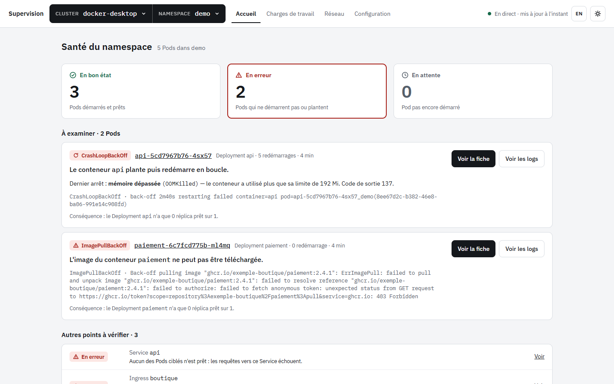
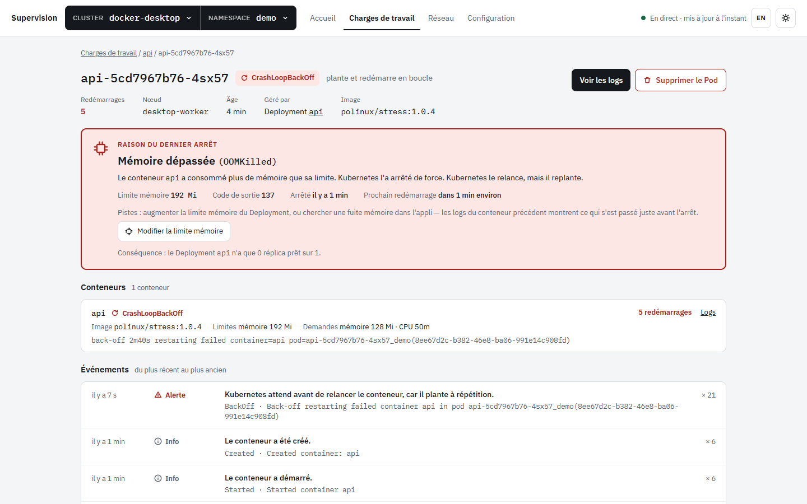
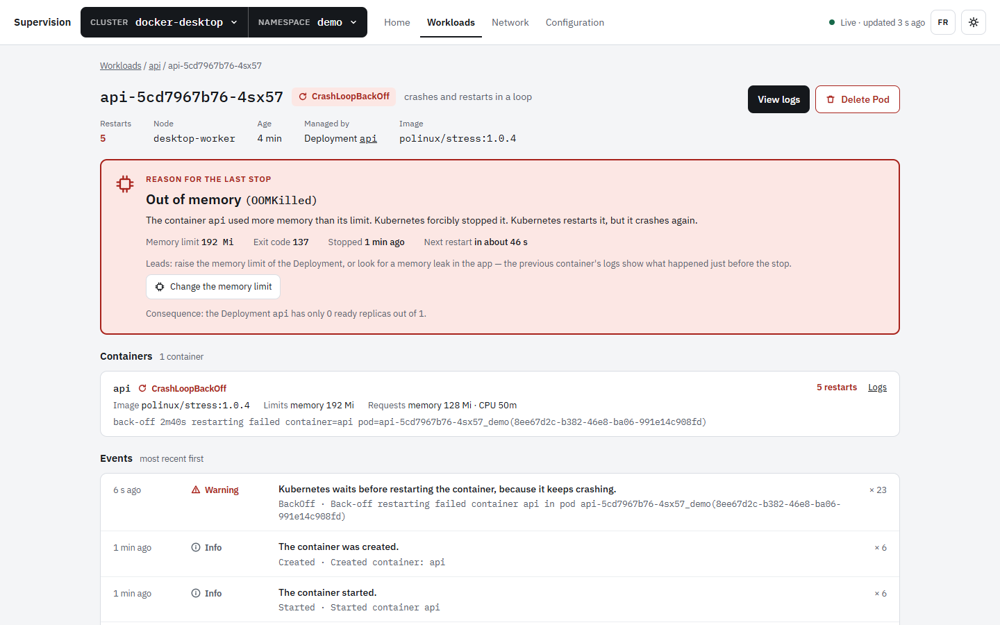
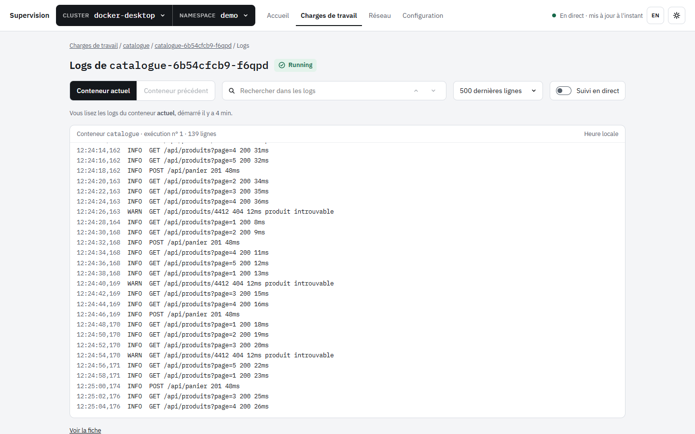
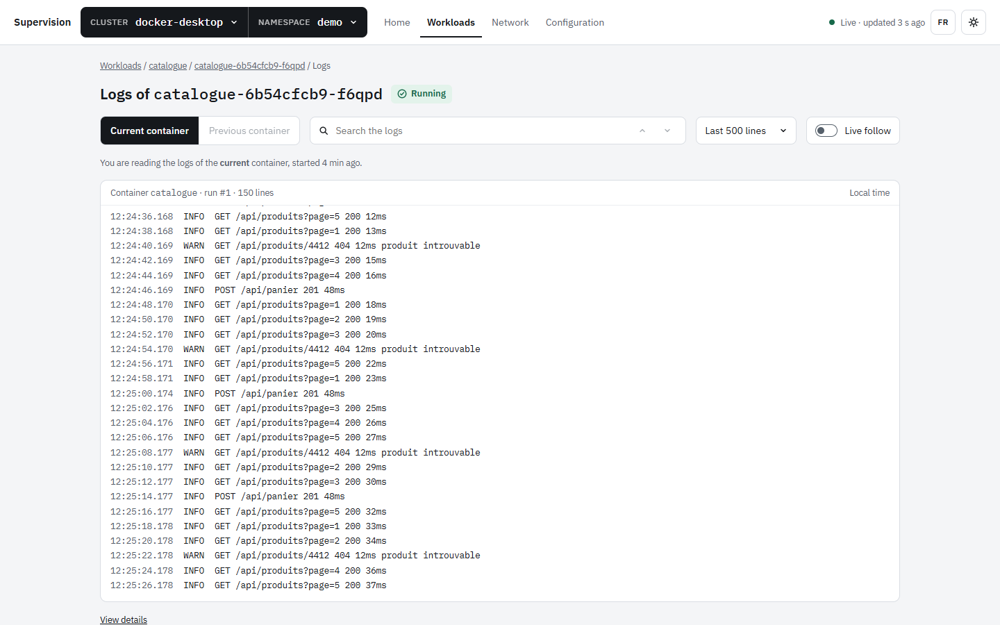
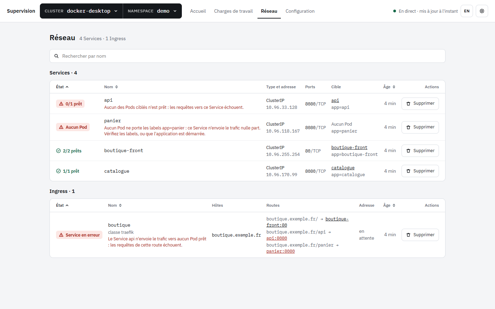
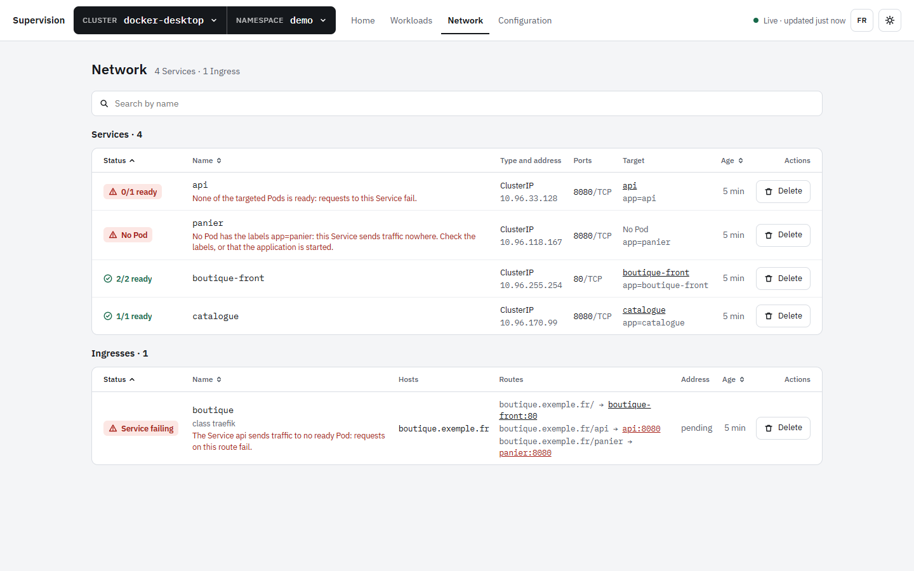
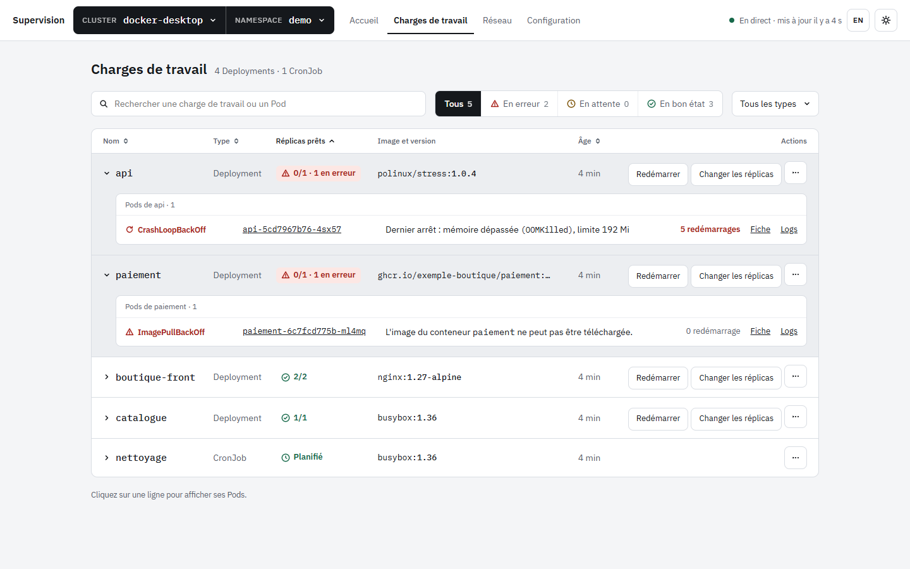
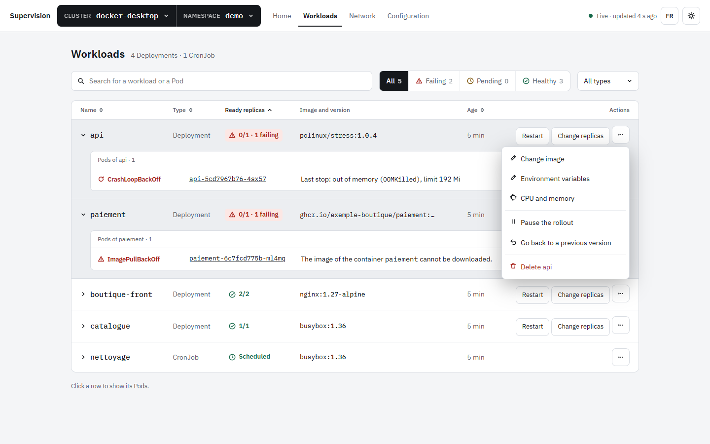

Votre cluster Kubernetes, expliqué en langage simple. Your Kubernetes cluster, explained in plain language.
Voyez l'état de vos applications et trouvez la cause d'une panne en quelques secondes, depuis le navigateur, sans terminal ni kubectl.
See the state of your applications and find the cause of an outage in seconds, from your browser, without a terminal or kubectl.
OOMKilled
« Le conteneur api plante puis redémarre en boucle. Dernier arrêt : mémoire dépassée, limite 192 Mi. »
“Container api keeps crashing and restarting. Last stop: out of memory, limit 192 Mi.”
Un seul fichier, rien à installer. A single file, nothing to install. Dernière versionLatest release

Du « ça ne marche plus » à la cause, sans chercher. From “it's broken” to the cause, without digging.
Les statuts Kubernetes restent affichés tels quels (CrashLoopBackOff, ImagePullBackOff…), toujours accompagnés d'une explication et de la marche à suivre.
Kubernetes statuses are shown as is (CrashLoopBackOff, ImagePullBackOff…), always with an explanation and what to do next.
La fiche d'un Pod dit pourquoi il s'est arrêtéA Pod's page tells you why it stopped
Raison du dernier arrêt, état de chaque conteneur, événements traduits. Et quand la correction est évidente, le bon formulaire est à un clic. Last termination reason, state of each container, translated events. And when the fix is obvious, the right form is one click away.
- Mémoire dépassée → « Modifier la limite mémoire »Out of memory → “Change memory limit”
- Image introuvable → « Changer l'image »Image not found → “Change image”


Les logs, en direct ou juste avant le plantageLogs, live or right before the crash
Suivi en temps réel, recherche, et « conteneur précédent » pour voir ce qui s'est passé avant un redémarrage. Live follow, search, and “previous container” to see what happened before a restart.


Le réseau, avec un diagnosticNetworking, with a diagnosis
Services et Ingress, Pods prêts derrière chaque Service. Un Service qui n'envoie le trafic vers aucun Pod est signalé, avec la raison. Services and Ingresses, ready Pods behind each Service. A Service that routes traffic to no Pod is flagged, with the reason.


Agir, toujours avec confirmationTake action, always with confirmation
Redémarrer, changer le nombre de réplicas, l'image, les variables, le CPU et la mémoire, revenir à une version précédente… Chaque action rappelle le cluster, le namespace et la conséquence avant d'agir. Restart, scale, change the image, variables, CPU and memory, roll back… Every action shows the cluster, the namespace and the consequence before anything happens.


Temps réelReal time
Les écrans se mettent à jour seuls et se reconnectent après une coupure.Screens update by themselves and reconnect after a network drop.
Tous les clustersAny cluster
Docker Desktop, kind, minikube, EKS, GKE, AKS, OpenShift… si kubectl marche, l'outil marche.Docker Desktop, kind, minikube, EKS, GKE, AKS, OpenShift… if kubectl works, it works.
Charges de travail complètesAll workloads
Deployments, StatefulSets, DaemonSets, Jobs, CronJobs, autoscalers (HPA), volumes et ConfigMaps.Deployments, StatefulSets, DaemonSets, Jobs, CronJobs, autoscalers (HPA), volumes and ConfigMaps.
Vos droits, rien de plusYour permissions, nothing more
Un droit manquant est expliqué à l'écran (action grisée avec sa raison), ce n'est pas une panne.A missing permission is explained on screen (greyed-out action with its reason), not shown as a failure.
Clair ou sombreLight or dark
Suit le thème du système, ou celui que vous choisissez.Follows your system theme, or the one you choose.
Français ou anglaisFrench or English
L'interface et les messages d'erreur suivent la langue choisie.The interface and error messages follow the chosen language.
Tout reste sur votre poste. Everything stays on your machine.
kube-supervision ne transmet aucune information à un autre système que votre propre cluster Kubernetes, et seulement quand vous le demandez. Pas de compte, pas de télémétrie, pas de serveur distant. kube-supervision does not transfer any information to any networked system other than your own Kubernetes cluster, and only when you ask for it. No account, no telemetry, no remote server.
Votre kubeconfig, vos droitsYour kubeconfig, your rights
L'outil utilise le kubeconfig et le plugin d'authentification de votre fournisseur, exactement comme kubectl. Aucun identifiant n'est envoyé au navigateur ni écrit dans les journaux.The tool uses your kubeconfig and your provider's authentication plugin, exactly like kubectl. No credential is sent to the browser or written to logs.
Accessible depuis votre poste seulementReachable from your machine only
Le serveur n'écoute que sur 127.0.0.1, refuse les requêtes d'un autre site et protège contre le « DNS rebinding ».The server only listens on 127.0.0.1, rejects requests from other sites and protects against DNS rebinding.
Jamais vos SecretsNever your Secrets
Les Secrets ne sont jamais lus. Des ConfigMaps, seuls les noms des clés sont affichés, jamais leur contenu.Secrets are never read. For ConfigMaps, only key names are shown, never their content.
Un fichier à télécharger, c'est tout. One file to download, that's it.
Pas de Node.js, pas d'installateur. L'outil s'ouvre dans votre navigateur sur http://127.0.0.1:7420, sur le contexte courant de votre kubeconfig.
No Node.js, no installer. The tool opens in your browser at http://127.0.0.1:7420, on the current context of your kubeconfig.
-
Téléchargez le fichier :Download the file:
-
Double-cliquez dessus. Une fenêtre de console s'ouvre avec le navigateur ; la fermer arrête l'outil.Double-click it. A console window opens along with the browser; closing it stops the tool.
« Windows a protégé votre ordinateur » ? Le fichier n'est pas encore signé. Cliquez sur Informations complémentaires, puis Exécuter quand même. Ou, une fois pour toutes, en PowerShell : “Windows protected your PC”? The file is not signed yet. Click More info, then Run anyway. Or, once and for all, in PowerShell:
Unblock-File .\kube-supervision-win-x64.exe
-
Téléchargez le fichier de votre Mac :Download the file for your Mac:
-
Dans le Terminal, depuis le dossier de téléchargement, autorisez puis lancez le fichier (le fichier n'est pas encore signé par Apple) :In Terminal, from your downloads folder, allow then run the file (it is not signed by Apple yet):
xattr -d com.apple.quarantine kube-supervision-macos-arm64 chmod +x kube-supervision-macos-arm64 ./kube-supervision-macos-arm64
-
Rendez-le exécutable et lancez-le :Make it executable and run it:
chmod +x kube-supervision-linux-x64 ./kube-supervision-linux-x64Pour l'avoir partout : renommez-le
kube-supervisionet placez-le dans~/.local/bin.To use it anywhere: rename itkube-supervisionand move it to~/.local/bin.
PrérequisRequirements
Un kubeconfig (celui de kubectl), l'accès réseau au cluster (VPN compris) et, si votre fournisseur en utilise un, son plugin d'authentification (gke-gcloud-auth-plugin, aws, kubelogin…).A kubeconfig (the one kubectl uses), network access to the cluster (VPN included) and, if your provider uses one, its authentication plugin (gke-gcloud-auth-plugin, aws, kubelogin…).
OptionsOptions
--port 8080 pour changer de port, --no-open pour ne pas ouvrir le navigateur. Avec Node.js 22.19+ : npx kube-supervision depuis les sources.--port 8080 to change the port, --no-open to skip opening the browser. With Node.js 22.19+: npx kube-supervision from source.
Vérifier un téléchargementVerify a download
Chaque fichier a une attestation signée par GitHub prouvant qu'il a été construit depuis ce dépôt :Each file has a GitHub-signed attestation proving it was built from this repository:
gh attestation verify <fichier> --repo bahaliou67/kube-supervisionOu comparez son empreinte avec SHA256SUMS.txt.Or compare its hash with SHA256SUMS.txt.
Rien à désinstaller, ou presque.Almost nothing to uninstall.
L'outil ne modifie pas votre système. Pour le retirer : arrêtez-le (Ctrl+C ou fermez sa fenêtre), supprimez le fichier téléchargé, puis le dossier kube-supervision-<version> qu'il crée dans le dossier temporaire (%TEMP% sous Windows, $TMPDIR sous macOS, /tmp sous Linux). Vos préférences de langue et de thème sont gardées par le navigateur seulement.
The tool does not change your system. To remove it: stop it (Ctrl+C or close its window), delete the downloaded file, then the kube-supervision-<version> folder it creates in the temporary folder (%TEMP% on Windows, $TMPDIR on macOS, /tmp on Linux). Your language and theme preferences are only kept by the browser.
Code signing policy
Les exécutables publiés sont construits uniquement par le workflow public release.yml, à partir du code source de ce dépôt, et chaque version est approuvée manuellement avant publication. Published executables are built only by the public release.yml workflow, from this repository's source code, and every release is manually approved before publication.
| Fichiers concernésSigned files | Exécutables publiés dans les Releases GitHub.Executables published in GitHub Releases. |
|---|---|
| SignatureSigning | Les exécutables Windows seront signés gratuitement par SignPath.io, avec un certificat de SignPath Foundation (candidature en cours ; la signature sera active dès son acceptation).Windows executables will be signed for free by SignPath.io, with a certificate by SignPath Foundation (application in progress; signing will be enabled once approved). |
| Authors · Committers | @bahaliou67 (Mamadou Aliou BAH) |
| Reviewers | @bahaliou67 — relit toute contribution extérieure (pull request) ; voir CODEOWNERS.reviews every outside contribution (pull request); see CODEOWNERS. |
| Approvers | @bahaliou67 — approuve chaque version avant signature.approves each release before signing. |
| ConfidentialitéPrivacy | Ce programme ne transmet aucune information à un autre système en réseau, sauf si l'utilisateur ou la personne qui l'installe ou l'utilise le demande expressément (ici : son propre cluster Kubernetes). Détails.This program will not transfer any information to other networked systems unless specifically requested by the user or the person installing or operating it (here: their own Kubernetes cluster). Details. |
| Signaler un problèmeReport an issue | Faille de sécurité : signalement privé (voir SECURITY.md).Security issue: private report (see SECURITY.md). |